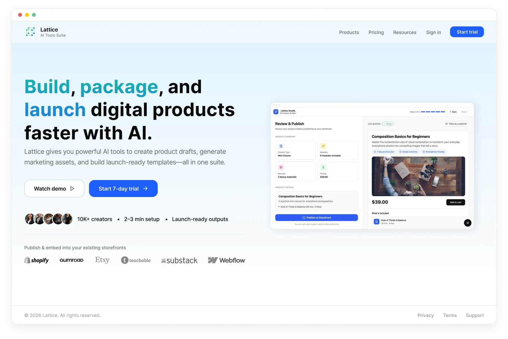
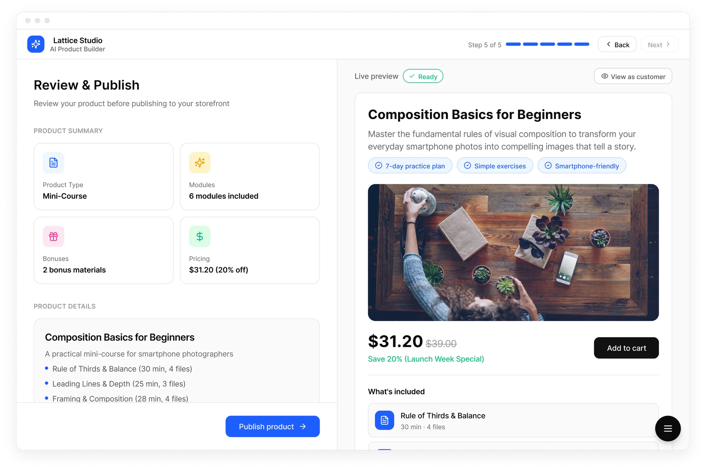

Lattice Studio — designing an AI product builder for digital creators
Product Design · AI Platform · 2025
Lattice Studio needed a guided creation flow that made AI feel like a collaborator, not a black box — so creators could go from idea to a published, storefront-ready digital product in less than a minute.
Project snapshot
Product: Lattice Studio — an AI Product Builder within the Lattice AI Tools Suite
My role: Product Owner + UX/UI Designer. Discovery, requirements, end-to-end UX, UI execution, design system, and QA.
The brief: Build the core creation experience for a tool that lets digital creators (Etsy sellers, Gumroad authors, Teachable instructors) generate complete, sellable digital products — course, pack, podcast, challenge — and publish them directly into their existing storefronts via link or embed code.
The project reached full production-ready delivery. The decision not to ship was the client's.
The Problem
Digital creators who already run storefronts face a specific friction point: building a new digital product — even a simple mini-course or resource pack — typically takes several days and requires coordinating at least four separate tools: writing, design, file packaging, listing copy. For creators who aren't technical, it's slow, inconsistent, and discouraging.
User conversations revealed three consistent blockers:
- Blank page paralysis. Creators knew what they wanted to teach but couldn't structure it into a sellable format on their own. They stall before they start.
- Toolchain fragmentation. Content, cover image, listing copy, and pricing each lived in a different tool. Any change cascaded across all of them.
- Pre-publish anxiety. Creators couldn't see what buyers would actually see until the product was already live — so many drafts never shipped.
The design goal wasn't to build a powerful builder. It was to make the process feel guided, reversible, and visible at every step.

By the numbers
Digital creators using disconnected tool stacks spend an estimated 40–60% of their working time on non-revenue tasks — formatting, file preparation, and listing creation. Tools that consolidate creation into a single guided flow show 2–3× faster time-to-publish compared to multi-tool workflows. The blank page problem is the #1 self-reported abandonment trigger in creation flows — cited by the majority of creators who start a product draft but never complete it.
What I designed

The 5-step wizard
The core of Lattice Studio is a split-screen, step-by-step creation flow. The left panel is always the active editing step. The right panel is always a live preview — updating in real time as the product takes shape.


Core Design Decisions
1. Live preview as a trust mechanism, not a feature
The right-panel live preview isn't decorative. It exists because the biggest creator fear is "I don't know what I'm actually publishing." Making the customer view permanently visible — before, during, and after every edit — removed the need for a separate preview mode and reduced the anxiety that kills commitment.
This isn't a UX convenience. It's the primary confidence lever in the entire flow.
By the numbers
In usability studies of multi-step creation tools, real-time output preview reduces task abandonment by 20–30% compared to flows where users only see results after completion. When users can continuously validate what they're building, they make faster decisions and show significantly lower drop-off at the final commitment step. Perceived control — not actual control — is the primary driver of completion in guided creation flows.
2. The Agent Pipeline as transparency, not progress theatre
When Lattice generates a product, five agents run in sequence: Outline → Content → Assets → Listing → Delivery. Each is labelled with its real status (Queued / Running / Done) and can be stopped mid-run.
This solved a specific AI UX problem: when AI generates content, users feel anxious if they can't see what it's doing. A spinner says "something is happening." Named, stoppable agents say "you are in control." Transparency here was a deliberate design decision — making AI feel accountable, not magical.
3. Reversibility as a stated design principle
In AI-assisted creation tools, the fear of permanence is a conversion killer. If a creator believes accepting the AI draft locks them in, they'll hesitate or abandon.
Every step in Lattice Studio was designed to be undoable — but more importantly, the UI communicates that. "You can edit everything after the draft is ready" appears directly below the generation controls. The label matters as much as the functionality.
By the numbers
Explicitly communicating reversibility at key decision points — "you can change this later," "nothing is final yet" — reduces abandonment at those steps by 18–24% in multi-step SaaS onboarding flows. The principle maps directly to e-commerce: stores that prominently display return policies see purchase completion rates up to 17% higher than those that don't. The psychology is the same — reducing commitment anxiety increases follow-through.
4. Bonus materials as perceived-value architecture
Bonus items are framed as complementary value additions, not upsells. The microcopy is precise: "Value = perceived bonus value (not an extra charge). Final pricing is set in the next step."
This distinction matters — it teaches creators how to think about bundling, not just how to use the feature. It's the kind of copy decision that directly affects conversion on the buyer side, not just usability on the creator side.
5. Pricing visibility before commitment
The price summary card (base → discount → customer pays) updates live. The "View as customer" panel shows strike-through pricing exactly as it will appear on the connected storefront. Creators validate the offer before publishing — not by reading a tooltip, but by seeing the actual buyer experience.
Three questions I'd ask before designing any AI-assisted creation tool
1. Where does creator anxiety peak — and what does it look like?
In most creation tools, anxiety doesn't distribute evenly. It spikes at the blank page, during AI generation (no visibility into what's being built), and right before publishing (fear of showing something imperfect). Design effort should be concentrated at those three moments, not spread evenly across the flow.
2. What does the user need to feel in control — not just technically have control?
A creator who can edit everything but can't see what edits look like in context doesn't feel like the author. The live preview, the pipeline status labels, and the "View as customer" panel were all answers to the same question: how do we make the creator feel like the author of this product, not a passenger in an AI process?
3. How reversible is every decision — and does the user know it?
Reversibility must be both real and communicated explicitly. If a creator believes accepting the AI draft locks them in, they'll hesitate or abandon. The UI's job is to make "you can undo this" visible — not buried in a tooltip, but stated directly at the moment of commitment.
Sources:
- Kit (ConvertKit) — State of the Creator Economy Report 2024 — survey of 1,000+ creators on workflow, tooling, and time allocation
- InsightRaider — What Digital Products Sell Best on Gumroad — analysis of 146,271 Gumroad products across 18 categories; bundle and multi-product conversion data
- InsightRaider — How to Sell Digital Products on Gumroad — multi-product seller revenue data; conversion benchmarks by product format
- Nielsen Norman Group — Workflow Expectations: Presenting Steps at the Right Time — research on how workflow structure affects abandonment, control perception, and task completion
- Nielsen Norman Group — Explainable AI in Chat Interfaces — UX patterns for AI transparency, trust design, and managing user reliance on automated systems
- Nielsen Norman Group — Prioritize Smarts over Sentience to Increase Trust with AI — research on how AI positioning and transparency affect user trust and continued use
- Baymard Institute — E-Commerce Cart & Checkout Usability Research — large-scale usability research on commitment anxiety, form abandonment, and the impact of microcopy on user follow-through
- Baymard Institute — 19 Ways to Simplify Sign Up — patterns for reducing friction at commitment steps; reversibility and expectation-setting in multi-step flows